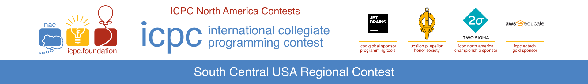

2022 ICPC South Central USA Regional Contest - Southern Conference
The 2022 South Central USA Regional was be February 25th, 2023. Results will be published soon.
SCUSA 2022 Regional Results
Contest Report The 2022 ICPC South Central Regional Contest was held on Saturday, 2/25/2023. We had five sites, with a total of 42 teams competing. Our practice contest started on time, and we completed the 30-minute session with no problems. After lunch, we started the Regional Contest at noon CST. Our only issues were easily overcome, and the contest continued smoothly.
Our region had two divisions. Division I is intended for traditional teams competing to advance to the North American Championship. Division II is intended for teams that want to compete but do not feel ready to take on the best. This division is intended for younger teams or schools just getting into ICPC.
Our Coaches’ Roundtable went well, with all of the coaches joining in and contributing ideas on how to recruit more schools and how to recruit more sites. Many ideas were innovative, and we chose a few to follow up on. We even came up with a couple of ideas to recruit more sites while brainstorming recruiting teams.
Informations about Contest:
Calendar of important dates
Contest Day Timeline
We will use the same Zoom address for all zoom meetings.
Useful Information
environment.avi Is a video that briefly describes the contest environment and explains how to print.
Kattis info will tell you a little bit about Kattis. This is from last year and some things have changed. But it is stll a good thing to watch if you are not adept at Kattis (the tool you will use to submit your solutions).
Return to Top of Page
Registration
Registration is now closed!Registration will be open until 1 week before contest (February 18, 2023). ICPC says registration must be complete by 1 week before Regional Contest. Registration deadline is February 18, 2023.
Registration deadline for free team t-shirts is February 1, 2023.
Return to Top of Page
Southern Conference
The ICPC South Central, South East and Mid Atlantic Programming Contests are joining together to form the Southern Conference. Our regional will still continue. The top three teams from our regional (as well as from the other two regionals) will advance to the North America Championship.
All three contests will use the same problem set and have a merged scoreboard available. All other advancement spots from the combined regions will be taken from the merged scoreboard (after eliminating the nine already promoted teams. As always, only one team per school will advance.
Return to Top of Page
Divisions
This year we will support two Divisions: I and II. Division I is the normal regional grouping from previous years. Division II is intended for less experienced teams and features a different problem set that is not as challenging as the Division I problem set.
When you register a team, you will see that each site has a Division I and a Division II version. Pick the appropriate combination.
Teams advancing to the ICPC North America Championship will be taken from the top of Division I. If not enough teams in Division I solve a problem, then selection will continue into Division II.
Note that if a school has teams in both divisions, the teams from that school in Division II will not be eligible to place (to ensure as many schools as possible get recognized).
Return to Top of Page
Practice Contest
A practice contest will be held prior to Regional. It will start on February 25th at 10:00 AM (Central Time) and will run for thirty minutes.
Return to Top of Page
Return to Top of Page
FAQ
Here are some questions that have been asked and the answers we have provided:
Return to Top of Page
SCUSA Staff
Return to Top of Page
ICPC SCUSA Announcement I
The next International Computer Programming Contest (ICPC) South Central United States of America (SCUSA) Regional Programming Contest will be February 25, 2023. But this is just one of many announcements we have. Here is a list of topics in this message:
Calendar
Upcoming SCUSA Regional
The next upcoming ICPC SCUSA Regional will be February 25, 2023. We plan to return to the traditional one day in-person contest. Teams will be three (3) undergraduate members and a coach. This contest will include an opening (over zoom), practice contest, lunch, rules review (over zoom), five (5) hour contest, a break and a Results Presentation (over Zoom).
To allow teams to better position themselves, we will again have Division I and II. Division I is aimed at teams who have competed before. Division II is intended for first time competitor teams. The problem sets will have differences (Division II will be more challenging). A school’s teams may be split across divisions. (i.e. one team in Division I and two in Division II). Teams solving problems in Division I will be ranked above all teams that solve problems in Division II.
Registration will open soon. You can expect another e-mail when it opens with site information.
With the return of on site competition, entrance fees will return. Regular registration will be $175 per team (3 contestants and coach). Early registration will be $125. Teams will receive 1 t-shirt per member and will include meal(s).
Call for Sites
This contest has been run as a distributed contest (prior to COVID). We NEED sites to host the contest. We would like a site to be able to host a minimum of 15 teams (your school’s teams cannot exceed 50% of the site team count). The Site Director will need to handle the following tasks:
We will provide the following:
ICPC North America Qualifier
The ICPC North America Qualifier will be February 4th. This is an online contest that any (and all) students are encouraged to compete in. This contest has no entry fee. It is intended for teams to compete in as a practice for the Regional. You can have others compete if you would like (students who are not competing in the regional for some reason, grad students, etc). This is an open contest to provide exposure and practice.
ICPC North America Championship
The ICPC North America Championship will be in May of 2023 at UCF (Orlando, Florida). The top teams from North America will advance to this contest. The best teams from this contest will advance to the ICPC World Finals Contest.
ICPC South East Conference Information
This year’s SCUSA Regional will be a little different. SCUSA has partnered with SEUSA and Mid-Atlantic. We are calling this the South East Conference (or Division). All three Regionals will occur at the same time, with the same problem sets. We will maintain separate score boards and awards. We will tweak advancing to ICPC NAC. The top three teams (from unique schools) from each Regional will advance to NAC as normal. We will then merge the score boards across all three Regionals and any other NAC slots that we have will be pooled and they will be chosen from the combined score board (after omitting teams already being promoted). This will ensure that the strongest teams from the three Regionals will advance to the NAC.
Return to Top of Page
SCUSA Announcement II
Second announcement (updated)
The next International Computer Programming Contest (ICPC) South Central United States of America (SCUSA) Regional Programming Contest will be February 25, 2023. But this is just one of many announcements we have. Here is a list of topics in this message:
Calendar
Upcoming SCUSA Regional
The next upcoming ICPC SCUSA Regional will be February 25, 2023. We plan to return to the traditional one day in-person contest. Teams will be three (3) undergraduate members and a coach. This contest will include an opening (over zoom), practice contest, lunch, rules review (over zoom), five (5) hour contest, a break and a Results Presentation (over Zoom).
For more information please visit our web site: acm2022.scusa.lsu.edu. Please continue to check this page for updates (they will be forthcoming).
With the return of on site competition, entrance fees will return. Normally we have an early registration period (for $125 per team) and a regular registration period (for $175 per team). Registration will be open by the time you receive this. Due to late nature of opening registration, we are going to use the early fee for the entire period this year. If you bring alternates, assistant coaches or guests they are $40 extra per person. Teams will receive one t-shirt per member and will include meal(s).
To allow teams to better position themselves, we will again have Division I and II. Division I is aimed at teams who have competed before. Division II is intended for first time competitor teams. The problem sets will have differences (Division II will be more challenging). A school’s teams may be split across divisions. (i.e. one team in Division I and two in Division II). Teams solving problems in Division I will be ranked above all teams that solve problems in Division II.
Registration will be open by the time you receive this. It will have two choices Division I All and Division II All. As we get definite confirmation on sites, we will work with you to best sort where you will go to compete. Here is the link to registration: https://icpc.global/regionals/finder/SCUSA-2022
As always, if you have any questions, please contact us at management@scusa.lsu.edu. Please start the subject with SCUSA: to make it easier for us to notice them and respond quickly.
Call for Sites
We REALLY NEED some more sites. Please contact management@scusa.lsu.edu if you think you might can host please contact us immediately and let us see if we can make it happen.
This contest has been run as a distributed contest (prior to COVID). We NEED sites to host the contest. We would like a site to be able to host a minimum of 15 teams (your school’s teams cannot exceed 50% of the site team count). The Site Director will need to handle the following tasks:
We will provide the following:
Please note the the 2023 Regional will be in October or November of 2023 and we will also need sites for that contest.
E-mail Information
If you do not wish to receive these e-mails in the future please contact management@scusa.lsu.edu. If you know of anyone that needs to be added to our list please contact us also.ICPC North America Qualifier
The ICPC North America Qualifier will be February 4th. This is an online contest that any (and all) students are encouraged to compete in. This contest has no entry fee. It is intended for teams to compete in as a practice for the Regional. You can have others compete if you would like (students who are not competing in the regional for some reason, grad students, etc). This is an open contest to provide exposure and practice.For more information about the NAQ, please visit ICPC NAQ 2023. To register please visit the Registration link.
ICPC North America Championship
The ICPC North America Championship will be in May of 2023 at UCF (Orlando, Florida). The top teams from North America will advance to this contest. The best teams from this contest will advance to the ICPC World Finals Contest.ICPC South East Conference Information
This year’s SCUSA Regional will be a little different. SCUSA has partnered with SEUSA and Mid-Atlantic. We are calling this the South East Conference (or Division). All three Regionals will occur at the same time, with the same problem sets. We will maintain separate score boards and awards. We will tweak advancing to ICPC NAC. The top three teams (from unique schools) from each Regional will advance to NAC as normal. We will then merge the score boards across all three Regionals and any other NAC slots that we have will be pooled (should be 5five slots) and they will be chosen from the combined score board (after omitting teams already being promoted). This will ensure that the strongest teams from the three Regionals will advance to the NAC.ICPC Virtual Career Fair
ICPC is hosting its second Virtual Career Fair on February 15, 2023. The Career Fair is open to Computer Science and related Disciplines and it is open to all of your students (not just competitors). Please visit ICPC Virtual Career Fair to register. Coaches, you may want to request a time slot and speak with the recruiter to see how you can best prepare your students for future opportunities.
Return to Top of Page
SCUSA Announcement III
Third announcement (updated Feb 6, 2022)
The next International Computer Programming Contest (ICPC) South Central United States of America (SCUSA) Regional Programming Contest will be February 25, 2023 (SCUSA 2022). To be clear this is the SCUSA Contest for 2022 (we got behind because of Covid). The 2023 SCUSA Contest will be in October/November. But this is just one of many announcements we have. Here is a list of topics in this message:
Calendar
Current SCUSA Regional
The next upcoming ICPC SCUSA Regional will be February 25, 2023. We plan to return to the traditional one day in-person contest. Teams will be three (3) undergraduate members and a coach. This contest will include an opening (over zoom), practice contest, lunch, rules review (over zoom), five (5) hour contest, a break and a Results Presentation (over Zoom).
For more information please visit our web site: acm2022.scusa.lsu.edu. Please continue to check this page for updates (they will be forthcoming).
With the return of on site competition, entrance fees will return. Normally we have an early registration period (for $125 per team) and a regular registration period (for $175 per team). Registration will be open by the time you receive this. Due to late nature of opening registration, we are going to use the early fee for the entire period this year. If you bring alternates, assistant coaches or guests they are $40 extra per person. Teams will receive one t-shirt per member and will include meal(s).
To allow teams to better position themselves, we will again have Division I and II. Division I is aimed at teams who have competed before. Division II is intended for first time competitor teams. The problem sets will have differences (Division II will be more challenging). A school’s teams may be split across divisions. (i.e. one team in Division I and two in Division II). Teams solving problems in Division I will be ranked above all teams that solve problems in Division II.
Registration is open and you can sign up for any of the sites (within the space available). Here is the link to registration: icpc.global/regionals/finder/SCUSA-2022
As always, if you have any questions, please contact us at management@scusa.lsu.edu. Please start the subject with SCUSA: to make it easier for us to notice them and respond quickly.
Current Regional Sites
The sites for the SCUSA 2022 contest are set:
Call for Sites (SCUSA 2023)
Even though SCUSA 2022 is not over yet, it is time to start thinking about sites for SCUSA 2023. The contest will be in the late October or early November time frame. As we saw, not getting sites confirmed early makes planning difficult for coaches. This will be a priority as soon as SCUSA 2022 is over.
We are considering BYOC (Bring Your Own Computer) for the next contest. Several schools have said they would be glad to host but lack the computer lab resources to do it. We are looking at the idea of having contestants bring their own machine. They would still boot from our image (without being able to access local storage). Machines would need ethernet ports (not wireless) and the site would need to be able to connect the machines to the campus network. What do you think?
This contest has been run as a distributed contest (prior to COVID). We NEED sites to host the contest. We would like a site to be able to host a minimum of 15 teams (your school’s teams cannot exceed 50% of the site team count). The Site Director will need to handle the following tasks:
We will provide the following:
E-mail Information
If you do not wish to receive these e-mails in the future please contact management@scusa.lsu.edu. If you know of anyone that needs to be added to our list please contact us also.
ICPC North America Championship
The ICPC North America Championship will be in May of 2023 at UCF (Orlando, Florida). The top teams from North America will advance to this contest. The best teams from this contest will advance to the ICPC World Finals Contest.
ICPC South East Conference Information
This year’s SCUSA Regional will be a little different. SCUSA has partnered with SEUSA and Mid-Atlantic. We are calling this the South East Conference (or Division). All three Regionals will occur at the same time, with the same problem sets. We will maintain separate score boards and awards. We will tweak advancing to ICPC NAC. The top three teams (from unique schools) from each Regional will advance to NAC as normal. We will then merge the score boards across all three Regionals and any other NAC slots that we have will be pooled (should be five slots) and they will be chosen from the combined score board (after omitting teams already being promoted). This will ensure that the strongest teams from the three Regionals will advance to the NAC.
ICPC Virtual Career Fair
ICPC is hosting its second Virtual Career Fair on February 15, 2023. The Career Fair is open to Computer Science and related Disciplines and it is open to all of your students (not just competitors). Please visit ICPC Virtual Career Fair (https://app.careerfairplus.com/nn_fl/fair/4699/employer/326362) to register. Coaches, you may want to request a time slot and speak with the recruiter to see how you can best prepare your students for future opportunities.
Discord
ICPC maintains a presence on Discord for teams and coaches. Please take advantage of this great resource. Here is the invite: https://discord.com/invite/CMZHJSg
Return to Top of Page